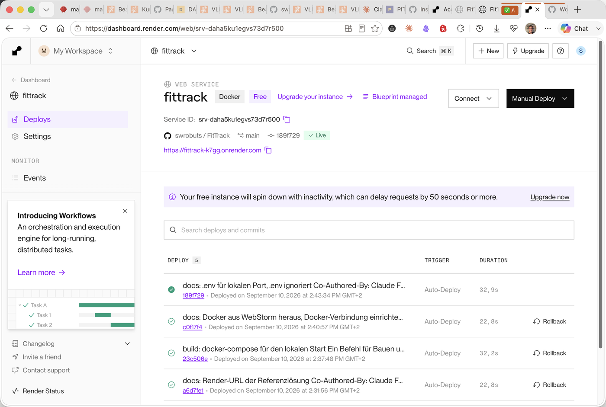
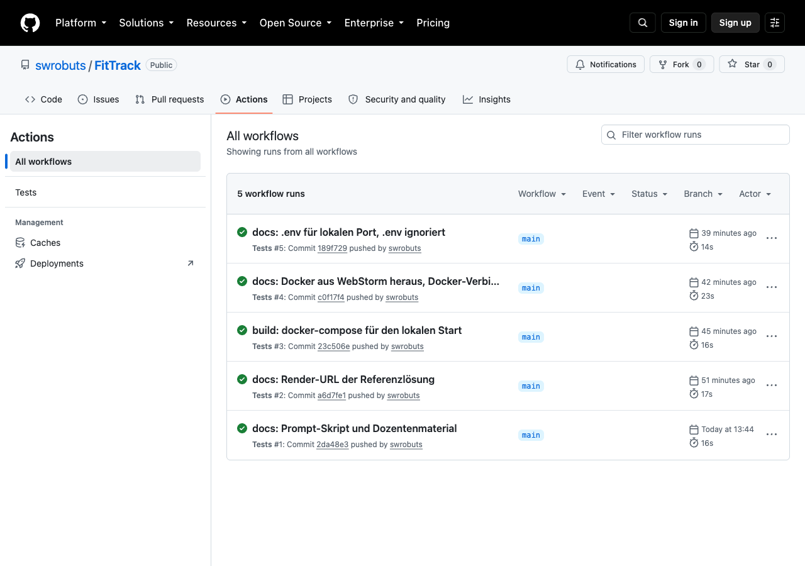

Auslieferung oder Ausführung
Die Frage kommt in jedem Kurs: Warum nicht einfach GitHub Pages? Weil Pages nur Dateien ausliefert, während FastAPI auf einem Server rechnen und aus der Datenbank lesen muss.
Liefert Dateien aus. HTML, CSS und JavaScript gehen unverändert an den Browser. Diese Lernumgebung liegt hier, samt SQLite im Browser. Für FitTrack zu wenig: Die Kennzahlen entstehen im Backend.
Führt die Anwendung aus. Baut aus dem Repository mit demselben Dockerfile wie lokal, startet den Container,
leitet Verkehr weiter, sobald /health antwortet.
Die Pipeline
flowchart LR
DEV["WebStorm
git commit, git push"] --> GH["GitHub
swrobuts/FitTrack"]
GH --> CI["GitHub Actions
pip install, pytest"]
GH --> R["Render.com
docker build aus dem Dockerfile"]
R --> C["Container
uvicorn, PORT von Render"]
C --> URL["https://fittrack-….onrender.com
Health-Check auf /health"]
GH --> P["GitHub Pages
FitTrack-Lab, statisch"]
main löst drei Dinge aus: Tests, Deploy der App, Deploy dieser Seiten. Was wo läuft, ist an der Kante ablesbar.Render per Blueprint
Alles geschieht im Browser. Die Datei render.yaml im Repository beschreibt den Dienst, Render liest
sie und legt ihn an. Vier Schritte statt eines Klickpfads durch Formulare.
services:
- type: web
name: fittrack
runtime: docker # Render baut das Dockerfile im Repo
plan: free # schläft nach 15 Minuten ohne Zugriff ein
healthCheckPath: /health # Render fragt diesen Pfad, um zu prüfen, ob die App läuft
autoDeploy: true # jeder Push auf main löst einen neuen Deploy aus
- Bei render.com anmelden, am einfachsten mit dem GitHub-Konto.
- New → Blueprint, GitHub verbinden, das Repository wählen.
- Render zeigt den Dienst aus
render.yaml. Apply. - Nach zwei bis vier Minuten steht die URL im Dashboard.
/healthaufrufen.

fittrack bei Render: Docker, Free, Blueprint managed, Live. Jede Zeile in der Deploy-Liste ist ein Push mit seiner Commit-Nachricht.Der Grund für US-3
healthCheckPath: /health ist der Grund, warum der Health-Endpunkt eine eigene Story war. Render
leitet erst Verkehr weiter, wenn dieser Pfad mit 200 antwortet. Und der Port: Render setzt PORT,
das Dockerfile liest ihn. Ohne diese Zeile startet der Dienst, antwortet aber nie.
Der Free-Plan
| Kontingent | Free | Bedeutung für den Kurs |
|---|---|---|
| RAM | 512 MB | Reicht für FastAPI und SQLite mit großem Abstand |
| Instanzstunden je Monat | 750 | Ein Dienst rund um die Uhr, oder mehrere Gruppen-Dienste, die meist schlafen |
| Build-Minuten je Monat | 500 | Ein Build dauert etwa 30 Sekunden; das sind rund 1000 Pushes |
| Bandbreite je Monat | 5 GB | Das Dashboard überträgt wenige hundert Kilobyte je Aufruf |
Cold Start
Nach 15 Minuten ohne Verkehr schläft der Dienst ein. Der nächste Aufruf wartet bis zu einer Minute. Vor einer Demo die URL einmal aufrufen, sonst warten alle im Raum mit. Teuer wird es nie: Bei Erreichen der Grenzen hält Render an, statt abzurechnen.
Quelle: Preisseite und Dokumentation von Render, Stand September 2026.
GitHub Actions
Eine Datei im Repository, und bei jedem Push läuft pytest auf einem frischen Rechner bei GitHub. Das
Ergebnis erscheint als Haken oder Kreuz am Commit. Fehlgeschlagene Tests fallen so auf, bevor jemand den Stand übernimmt.
name: Tests
on: [push, pull_request]
jobs:
pytest:
runs-on: ubuntu-latest
steps:
- name: Code auschecken
uses: actions/checkout@v4
- name: Python 3.12 einrichten
uses: actions/setup-python@v5
with:
python-version: "3.12"
- name: Abhängigkeiten installieren
run: pip install -r requirements.txt
- name: Tests ausführen
run: pytest

Warum ein fremder Rechner
Auf dem eigenen Rechner sind die Pakete schon da, die Umgebung ist eingerichtet, ein vergessener Eintrag in
requirements.txt fällt nicht auf. Der Runner bei GitHub fängt bei null an. Besteht der Test dort,
besteht er überall. Dasselbe Argument wie beim Container.
Der Prompt
Erstelle .github/workflows/tests.yml für GitHub Actions: bei jedem Push und Pull Request auf ubuntu-latest Python 3.12 einrichten, pip install -r requirements.txt und pytest ausführen. Schritte auf Deutsch benennen, ein Kommentar am Anfang, der erklärt, wo man das Ergebnis sieht.
- Aktuelle Versionen der Actions?
checkout@v4,setup-python@v5. Modelle schlagen gern ältere vor. - Läuft
pytestaus dem Projektordner? Dort liegtpytest.inimit dem Testpfad. - Nichts Ungefragtes? Kein Linting, keine Matrix über fünf Python-Versionen, kein Cache. Das kann später kommen.
Übungen
Drei Übungen: Was wo läuft, die Pipeline zuordnen, und der Push an der Konsole.
Zusammenfassung
- Statisches Hosting liefert Dateien aus, ein Web Service führt die App aus. FitTrack braucht den Web Service, diese Seiten nicht.
render.yamlbeschreibt den Dienst. Render baut mit demselben Dockerfile wie lokal.- Der Health-Check auf
/healthund diePORT-Variable sind die zwei Dinge, die den Betrieb mit der Entwicklung verbinden. - Der Free-Plan reicht für den Kurs. Cold Start nach 15 Minuten, vor der Demo einmal aufrufen.
- GitHub Actions führt die Tests auf einem frischen Rechner aus. Der grüne Haken gehört zur Definition of Done.